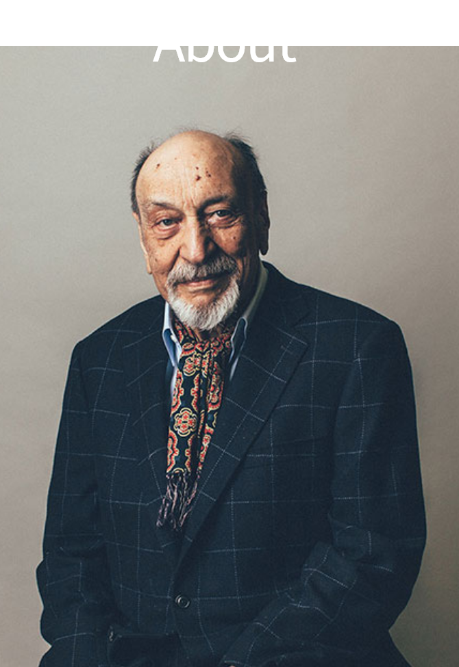
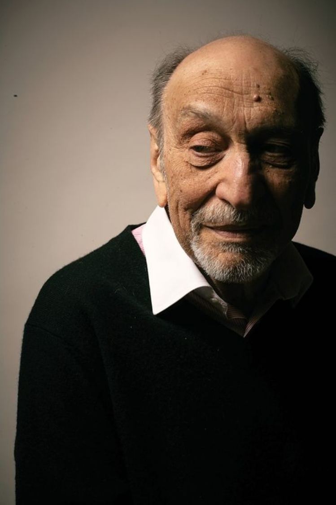
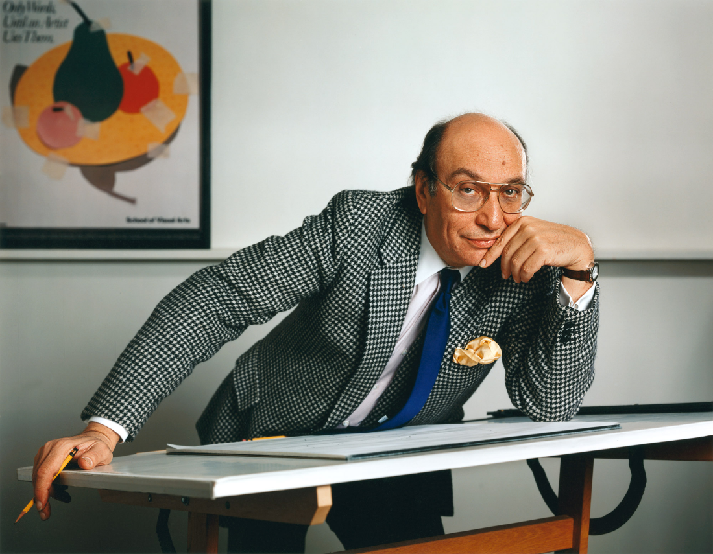

1929~2020
Graphic Designer
Who is Milton Glaser?
"디자인을 한다는 것은 통제나 장악할 수 있는
모든 수단을 이용해 명확한 의사소통을 하는 것이다."
모든 수단을 이용해 명확한 의사소통을 하는 것이다."
밀튼 글레이저는 20세기 미국의 그래픽 디자이너, 일러스트레이터, 예술가로, 전 세계적으로
유명한 인물이다.
그는 1929년생이며 그래픽 디자이너이자 기업가이다. 1951년 뉴욕의 ‘쿠퍼 유니언 예술대학'을
졸업하고 풀브라이트(Fulbright) 장학금으로 이탈리아의 볼로냐 아카데미로 유학 후 다시
미국으로 돌아왔다. 또한 1954년 세이머 크와트(Seymour Chewast)와 ‘푸시 핀 스튜디
오(Push Pin Studios)'를 설립했다. 그 후 1955년부터 1974년까지 ‘푸시 핀 그래픽'의 편집
장이자 공동 아트디렉터로 일했다. 당시 ‘푸시 핀 스튜디오'는 독특한 개성과 수많은 아이디어
를 발전시켜 1960년대에 넘쳐났던 타이포그래피 스타일에 도전하며 대중들과 소통할 수 있는
재치 있는 디자인으로 대안을 제시하였다. 1961년에 'SVA(School of Visual Arts)'에서 학
생을 가르치는 교육자로서도 활동하기 시작했다. 나아가, 1968년에는 '뉴욕 매거진'의 창간과
함께 디자인 디렉터를 맡으며 재미난 로고와 대표적인 캠페인들로 인해 세계적으로 유명해졌
으며 이외에도, '아메리칸 에어라인(American Airlines)'과 'IBM'의 로고 디자인을 비롯한 다
양한 로고와 포스터 등을 작업하면서, 그는 그래픽 디자인 역사에 큰 영향을 미쳤다.
지칠 줄 모르는 창조력을 지닌 그는 세계적인 영향력과 명성을 얻었고 특히 뉴욕의 도시 정체
성을 강화시켜준‘아이 러브 뉴욕(I♥NY)’로고는 세계 여러 도시에 응용되며 디자인의 힘을 느
끼게 해준 사례이다. 2004년에는 쿠퍼휴이트 국립디자인 뮤지엄 내셔널 디자인 어워드를 수
상하고 그로부터 5년 후에는 예술 활동에 있어서 뛰어난 업적을 인정받아 백악관에서 미국 대
통령인 버락 오바마로부터 국가예술상까지 수상했다. 2020년 6월 26일 뉴욕 맨하탄에서 91
세의 나이로 세상을 떠났지만, 그의 작품들은 그의 삶과 업적을 기리며 계속해서 많은 사람들
에게 영감을 줄 것이다. 이후, 국제적인 작품들과 함께 교육과 디자인 분야에서도 활발히 활동
하면서, 디자인 업계에서 끊임 없이 언급되면서 굉장히 많은 사람들에게 큰 영감을 주었다.
유명한 인물이다.
그는 1929년생이며 그래픽 디자이너이자 기업가이다. 1951년 뉴욕의 ‘쿠퍼 유니언 예술대학'을
졸업하고 풀브라이트(Fulbright) 장학금으로 이탈리아의 볼로냐 아카데미로 유학 후 다시
미국으로 돌아왔다. 또한 1954년 세이머 크와트(Seymour Chewast)와 ‘푸시 핀 스튜디
오(Push Pin Studios)'를 설립했다. 그 후 1955년부터 1974년까지 ‘푸시 핀 그래픽'의 편집
장이자 공동 아트디렉터로 일했다. 당시 ‘푸시 핀 스튜디오'는 독특한 개성과 수많은 아이디어
를 발전시켜 1960년대에 넘쳐났던 타이포그래피 스타일에 도전하며 대중들과 소통할 수 있는
재치 있는 디자인으로 대안을 제시하였다. 1961년에 'SVA(School of Visual Arts)'에서 학
생을 가르치는 교육자로서도 활동하기 시작했다. 나아가, 1968년에는 '뉴욕 매거진'의 창간과
함께 디자인 디렉터를 맡으며 재미난 로고와 대표적인 캠페인들로 인해 세계적으로 유명해졌
으며 이외에도, '아메리칸 에어라인(American Airlines)'과 'IBM'의 로고 디자인을 비롯한 다
양한 로고와 포스터 등을 작업하면서, 그는 그래픽 디자인 역사에 큰 영향을 미쳤다.
지칠 줄 모르는 창조력을 지닌 그는 세계적인 영향력과 명성을 얻었고 특히 뉴욕의 도시 정체
성을 강화시켜준‘아이 러브 뉴욕(I♥NY)’로고는 세계 여러 도시에 응용되며 디자인의 힘을 느
끼게 해준 사례이다. 2004년에는 쿠퍼휴이트 국립디자인 뮤지엄 내셔널 디자인 어워드를 수
상하고 그로부터 5년 후에는 예술 활동에 있어서 뛰어난 업적을 인정받아 백악관에서 미국 대
통령인 버락 오바마로부터 국가예술상까지 수상했다. 2020년 6월 26일 뉴욕 맨하탄에서 91
세의 나이로 세상을 떠났지만, 그의 작품들은 그의 삶과 업적을 기리며 계속해서 많은 사람들
에게 영감을 줄 것이다. 이후, 국제적인 작품들과 함께 교육과 디자인 분야에서도 활발히 활동
하면서, 디자인 업계에서 끊임 없이 언급되면서 굉장히 많은 사람들에게 큰 영감을 주었다.


F I L M O G R A P H Y

Video: Milton Glaser: How great
design makes ideas new
design makes ideas new
전설적인 그래픽 디자이너 밀튼 글레이저는
피에로 델라 프란체스카로부터 영감을 받아
새로운 그림에 깊이 빠져든다. 여기에서, 그는
아이디어를 분해하고 새로운 것을 만들면서
무엇이 설득력 있는 포스터를 만드는지에 대해
생각한다.
피에로 델라 프란체스카로부터 영감을 받아
새로운 그림에 깊이 빠져든다. 여기에서, 그는
아이디어를 분해하고 새로운 것을 만들면서
무엇이 설득력 있는 포스터를 만드는지에 대해
생각한다.
Have a Qusetion? Click to the Here.